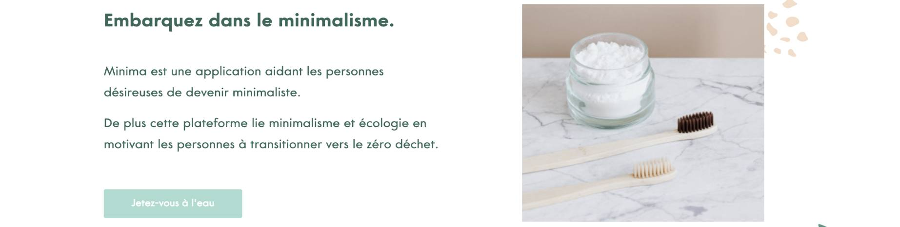
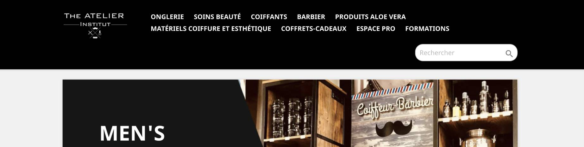
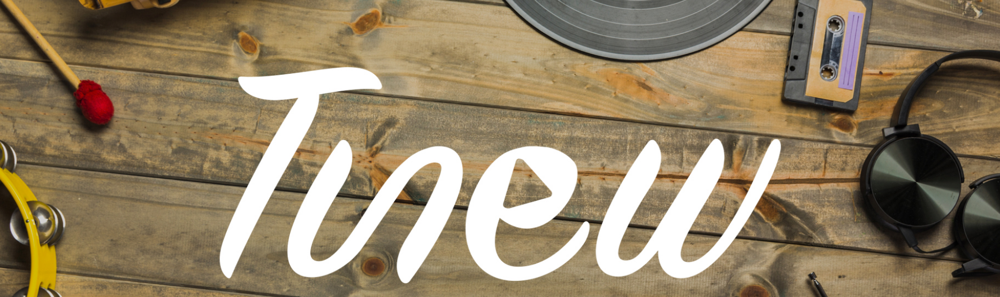

<section id="projets">
  <div class="container">
    <h3 class="text-center">< Mes projets ></h3>

    <div class="card">
      <div class="card-body">
        <h4 class="card-title">Minima</h4>
        <p class="card-text">
          <strong>Compétition<br /></strong>
          <strong>Thème</strong> : Minimalisme.
          <br />Nous sommes une jeune startup composée de 8 membres. Passionnés de minimalisme et soucieux de l'environnement nous avons décidé de lier ces deux sujets en aidant les gens à choisir ce mode de vie et les conseillers durant la transition.
          Mon rôle : Développeuse web du site vitrine Minima et de sa PWA.
          Langages et technologies utilisées : HTML5, SASS, Angular 9, Firebase, Bootstrap<br />
          <strong>Site vitrine</strong> :
          <a href="https://minima.celine-ly.com/">Minima</a>
          <br />
          <strong>L'application</strong> :
          <a href="https://minima-app.celine-ly.com/">Minima App</a>
        </p>
      </div>
      
    </div>
    <br />
    <div class="card">
      <div class="card-body">
        <h4 class="card-title">Euphoriart - Hommage</h4>
        <p class="card-text">
          <strong>Compétition<br /></strong>
          <strong>Thème</strong> : Campagne de sensibilisation à l'art.
          <br />Groupe de 12 étudiants en charge de créer une association
          (Euphoriart) et créer une campagne de sensibilisation (Hommage). Mon
          rôle dans ce projet a été de développer le site de l'association et le
          site campagne. <br />
          <strong>Site de l'association</strong> :
          <a href="https://euphoriart.celine-ly.com/">Euphoriart</a>
          <br />
          <strong>Site de la campagne</strong> :
          <a href="https://hommage.celine-ly.com/">Hommage</a>
        </p>
      </div>
      
    </div>
    <br />
    <div class="card">
      <div class="card-body">
        <h4 class="card-title">Atelier Institut Shop</h4>
        <p class="card-text">
          <strong>Création site e-commerce<br /></strong>
          <strong>Client : </strong> : Atelier Institut Bussy-St-Goerges.
          <br />Création d'un site e-commerce sur-mesure pour le Salon The Atelier Institut à Bussy-St-Georges sous Prestashop 1.7.6.7 en local puis transfert sur un serveur web.
          <br />
          Incluant le SEO, déploiement, graphisme.<br />
          <strong>Site :</strong> 
          <a href="https://atelierinstitut-shop.fr/index.php">Atelier Institut Shop</a>
        </p>
      </div>
      
    </div>
    <br />
    <div class="card">
      <div class="card-body">
        <h4 class="card-title">Tunew</h4>
        <p class="card-text">
          <strong>Projet MMI<br /></strong>
          <strong>Thème</strong> Tunew est une webradio créée par 4 étudiants
          qui aborde des sujets autour des moyens pour améliorer le monde de
          demain et également la vie des jeunes. Elle dispose de trois émissions
          : <strong>Nuance Verte</strong>, l’émission sur l’écologie,
          l’environnement et les produits naturels,
          <strong>Les conseils de demain</strong> qui est une émission qui
          présentera les conseils et astuces pour les jeunes et enfin
          <strong>Génération à suivre</strong> qui est une émission pour
          découvrir des jeunes talents. <br />
          <strong>Site</strong> :
          <a href="https://clee1999.github.io/tunew/">Tunew</a>
        </p>
      </div>
      
    </div>
    <h3 class="mt-5 text-center wow slideInRight">
      Pour plus de projets :
      <span style="font-size: 130px;">
        <a href="https://github.com/clee1999" target="_blank"
          ><i class="fab fa-github"></i
        ></a>
      </span>
    </h3>
  </div>
</section>
